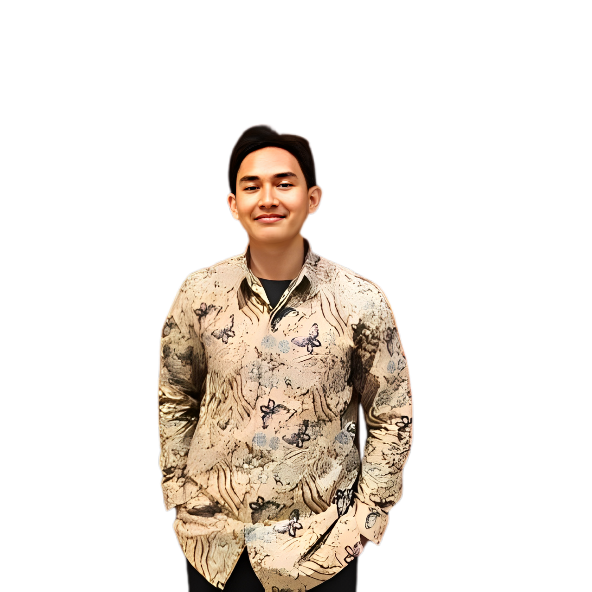

hello everyone i am
MUHAMMAD SYAHRUL NIZAM
Student of Riau University's Department of Business Administration.Have Interest in business development and data analytics

Hello! I'm Muhammad Syahrul Nizam, a 7th-semester Business Administration student at Universitas Riau with a strong foundation in business development,data analytics and Project Management. I bring expertise in tools like Microsoft Office, Spreadsheets, Figma, and SQL. Through my academic and professional journey, I've honed my skills in communication, problem-solving, and collaboration, essential traits for effective teamwork and leadership..
With experience in business development, I have led projects that involve designing and creating new products and developing innovative strategies to drive growth. As a Business Entrepreneurship Manager for Himpunan Mahasiswa Administrasi Bisnis, I helped create and expand "Kedai Adbis" by establishing effective relationships with other entrepreneurs and implementing growth strategies. Additionally, my participation in Wirausaha Kampus Merdeka enhanced my skills in entrepreneurship through activities like marketing validation, prototyping, and developing business models.
I possess a solid foundation in data analytics, with proficiency in tools such as SQL, BigQuery, and Spreadsheet applications. I have completed courses like "Data Analytics Essentials" and various Google certifications, which have equipped me with the ability to handle data from preparation to analysis. These skills enable me to make informed, data-driven decisions, vital for business insights and strategic planning. My expertise allows me to process and clean data, analyze it for meaningful insights, and support business decisions.
I have successfully coordinated multiple projects, including leading a team during the Kuliah Kerja Nyata (KKN) program, where I managed more than 12 projects as a team leader one of them is planting for 1,000 seedlings in Muara Lembu. This experience involved planning, organizing, and executing various work programs while promoting environmental sustainability.
Led a team in the Wirausaha Kampus Merdeka program. Engaged in online and offline entrepreneurship courses and developed a prototype business. Conducted marketing validation and business practice activities for an UMKM in Pekanbaru City
Managed the business development of "Kedai Adbis," creating new products and implementing strategies to drive growth. Built relationships with entrepreneurs within the faculty.
Conducted administrative tasks, managed schedules and meetings, and created designs for organizational platforms. Developed the organization website using WordPress.
Organized and implemented a community service program focused on environmental care with more than 12 projects, including planting 1,000 seedlings and initiating waste recycling activities.
I am a dedicated Business Administration student at Universitas Riau with expertise in business development, data analytics, and project management. My experience includes leading projects, managing teams, and creating effective strategies to drive growth and impact
I’d love to connect! Whether you have a project opportunity, a question, or just want to say hello, feel free to reach out